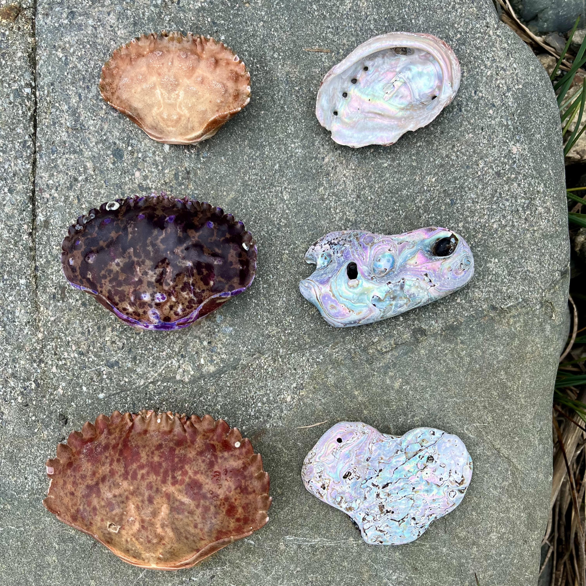
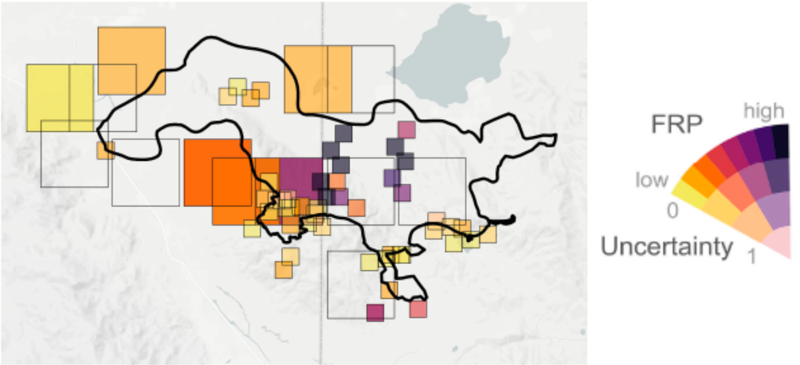
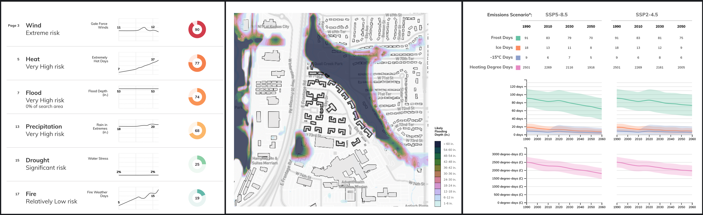
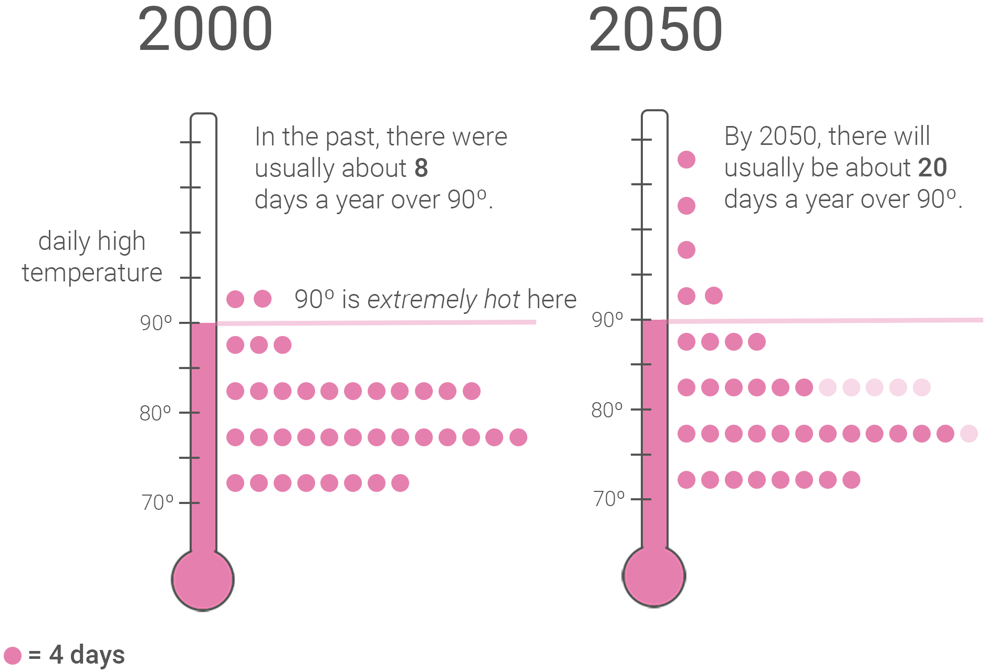
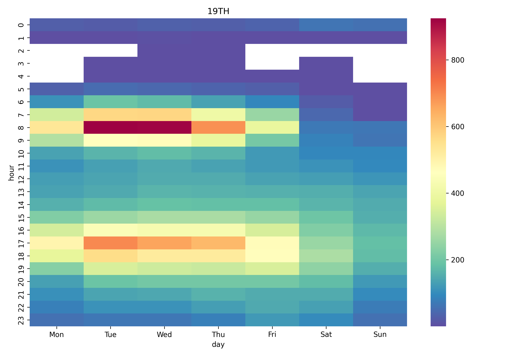
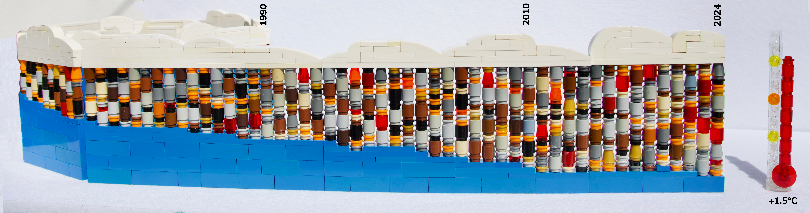

Annie Preston
Data Visualization
- Environmental risk communication
- Interpretability for decision making
- Uncertainty
Publications
Data Visualization Research

Communicating Uncertainty and Risk in Air Quality Maps

Uncertainty-Aware Visualization for Analyzing Heterogeneous Wildfire Detections
Climate Risk Visualization
Professional Work Samples

Property Risk Report
Automated pdf report describing risks from climate change to a particular property or location. See samples.

Hazard Risk Communication
Risks from heat, fire, flood, drought, precipitation, and more, on city- and state-specific pages, and for custom reports. See samples.
Miscellaneous Projects

BART Station Ridership
Supporting transit advocacy work by highlighting ridership patterns at BART stations
Github

LEGO visualization
"choices" amounts of greenhouse gases, and amounts of global warming (above)
"what we've done" investigating the scope of greenhouse gas emissions
"distances" comparing travel times